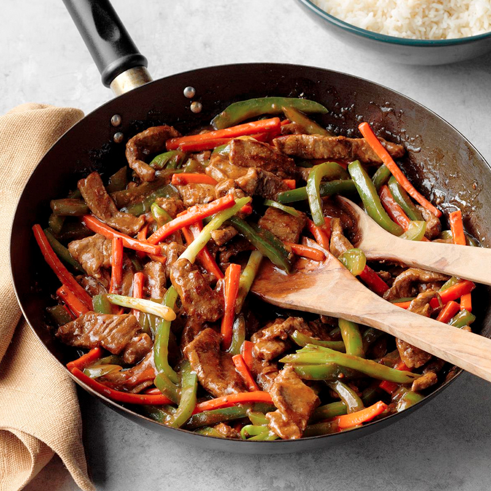

Salt and Pepper Beef

Beef tossed with a mixture of salt, spices and vegetables.
Easy to make chinese dish that will make a good subsitute for a chinese takeaway. Recreate the wonderful flavours of your favourite chinese dish from your very own kitchen.
Ingredients
- 500g Beef steak
g
- 1 large onion
- 2 Bell peppers
- Salt
- Black pepper
- Chili pepper
- Chinese five-spice
- 2tsb dark soy sauce
Steps
- Cut your beef in to thin strips, mix with the spices and Soy sauce.
- Slice vegetables in to either thin strips or thick pieces.
- Heat oil in a pan at high heat and fry for 2 minutes then remove from pan.
- Fry vegetables for until they start to become soft and then add the beef back in to the pan.
- Cook for a further minute then plate up with rice or noodles.